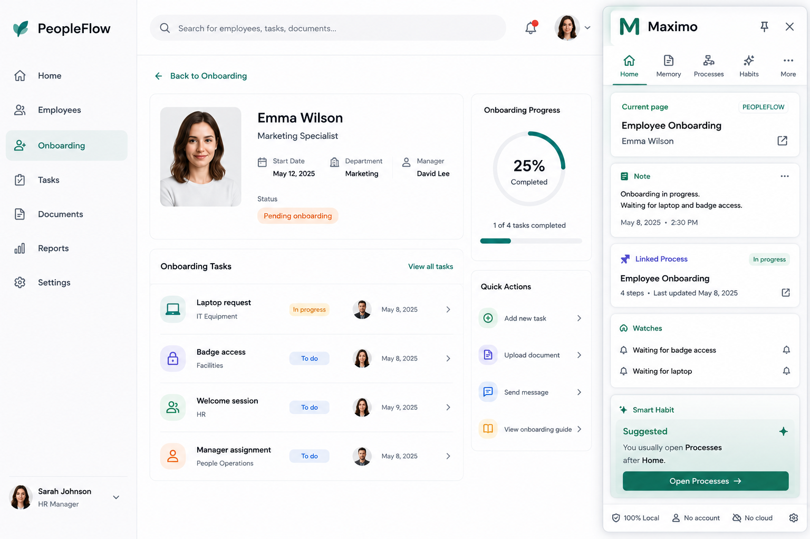
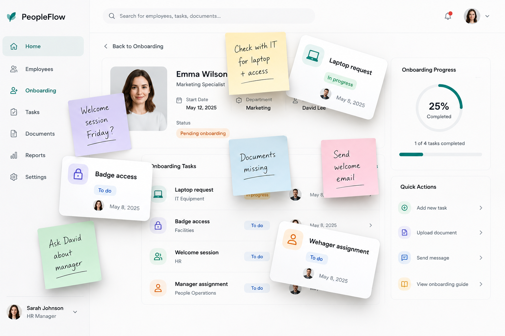
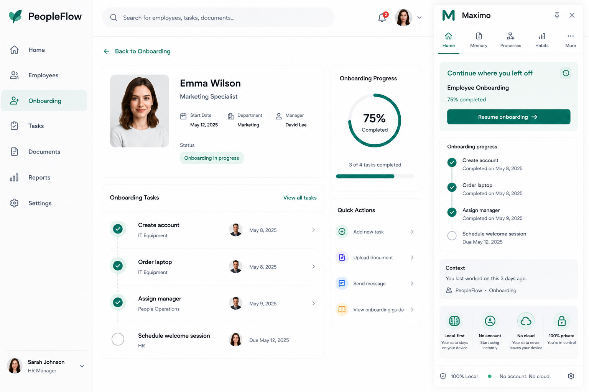
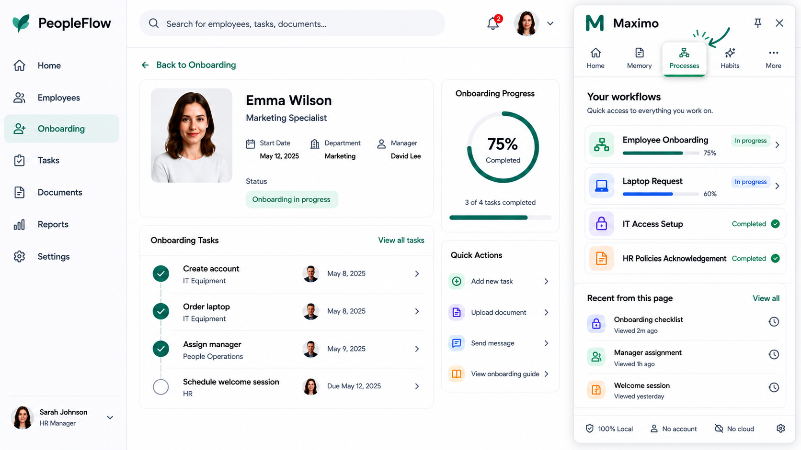

Private browser extension
Your contextual work memory.
Maximo helps you capture notes, processes and work context directly inside the web applications you already use.

The problem
Work context gets lost.
Notes live in one place. Tasks in another. Processes in your head. Maximo keeps the context attached to the work itself.

Remember
Capture context where work happens.
Add notes, anchors and follow-ups directly on the page, so you always know why something mattered.
Contextual Memory
Attach notes to a page, a field, a person, a supplier, a ticket or any business object.
- Page-level notes
- Anchored memories
- Quick capture
Resume
Continue exactly where you left off.
Maximo surfaces the last object you were working on, so you can restart without reconstructing the context.

Processes
Turn repeated work into reusable steps and continue them over time.
Watches
Surface important context when page conditions are met.
Dashboard
Monitor values that matter across the pages you work with.
Guides
Capture a task once and reuse it as documentation or a test case.
Smart Habits
Maximo learns your workflow locally.
Smart Habits can suggest the next Maximo action. Smart Advanced Habits can detect repeated website routines — only after explicit opt-in.

Privacy by design
No cloud required. No account required.
Maximo is designed as a local-first browser extension. Your work memory stays on your device.
Demo story
From fragmented work to connected context.
Use your product video here: problem, context capture, continue where you left off, Smart Habits, privacy.
FAQ
Simple answers.
Does Maximo need an account?
No. Maximo is designed to be used without an account.
Does Maximo send my data to the cloud?
No cloud is required by default. Maximo is designed as a local-first extension.
Does Maximo read my browser history?
No. Smart Advanced Habits learn only from activity observed after explicit opt-in.
Which apps does Maximo support?
Maximo is app agnostic. It is designed to work across web applications.
Early access
Build your contextual work memory.
Maximo is currently in early development.
Request early access